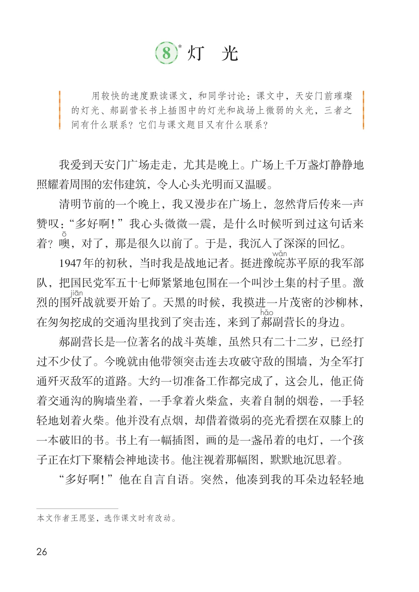
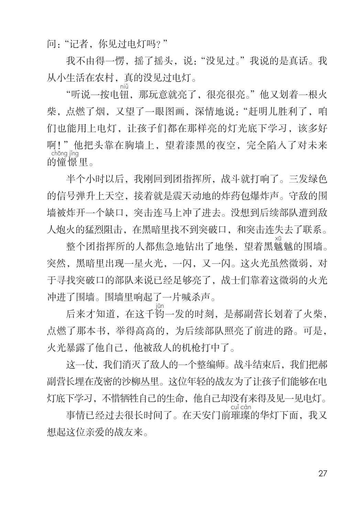

第二单元 · 第 8 课
灯光
文字内容 PDF 第 31 页
*
课后练习
- 用较快的速度默读课文，和同学讨论：课文中，天安门前璀璨的灯光、郝副营长书上插图中的灯光和战场上微弱的火光，三者之间有什么联系？它们与课文题目又有什么联系？我爱到天安门广场走走，尤其是晚上。广场上千万盏灯静静地照耀着周围的宏伟建筑，令人心头光明而又温暖。清明节前的一个晚上，我又漫步在广场上，忽然背后传来一声赞叹：“多好啊！”我心头微微一震，是什么时候听到过这句话来T‘着？噢，对了，那是很久以前了。于是，我沉入了深深的回忆。1947年的初秋，当时我是战地记者。挺进豫皖苏平原的我军部队，把国民党军五十七师紧紧地包围在一个叫沙土集的村子里。激烈的围歼战就要开始了。天黑的时候，我摸进一片茂密的沙柳林，在匆匆挖成的交通沟里找到了突击连，来到了郝副营长的身边。郝副营长是一位著名的战斗英雄，虽然只有二十二岁，已经打过不少仗了。今晚就由他带领突击连去攻破守敌的围墙，为全军打
- 通歼灭敌军的道路。大约一切准备工作都完成了，这会儿，他正倚着交通沟的胸墙坐着，一手拿着火柴盒，夹着自制的烟卷，一手轻轻地划着火柴。他并没有点烟，却借着微弱的亮光看摆在双膝上的一本破旧的书。书上有一幅插图，画的是一盏吊着的电灯，一个孩子正在灯下聚精会神地读书。他注视着那幅图，默默地沉思着。“多好啊！”他在自言自语。突然，他凑到我的耳朵边轻轻地
文字内容 PDF 第 32 页
问：“记者，你见过电灯吗？”
我不由得一愣，摇了摇头，说：“没见过。”我说的是真话。我从小生活在农村，真的没见过电灯。
“听说一按电钮，那玩意就亮了，很亮很亮。”他又划着一根火柴，点燃了烟，又望了一眼图画，深情地说：“赶明儿胜利了，咱们也能用上电灯，让孩子们都在那样亮的灯光底下学习，该多好啊！”他把头靠在胸墙上，望着漆黑的夜空，完全陷入了对未来的憧憬里。
半个小时以后，我刚回到团指挥所，战斗就打响了。三发绿色的信号弹升上天空，接着就是震天动地的炸药包爆炸声。守敌的围墙被炸开一个缺口，突击连马上冲了进去。没想到后续部队遭到敌人炮火的猛烈阻击，在黑暗里找不到突破口，和突击连失去了联系。
整个团指挥所的人都焦急地钻出了地堡，望着黑魆魆的围墙。突然，黑暗里出现一星火光，一闪，又一闪。这火光虽然微弱，对于寻找突破口的部队来说已经足够亮了，战士们靠着这微弱的火光冲进了围墙。围墙里响起了一片喊杀声。
后来才知道，在这千钧一发的时刻，是郝副营长划着了火柴，点燃了那本书，举得高高的，为后续部队照亮了前进的路。可是，火光暴露了他自己，他被敌人的机枪打中了。
这一仗，我们消灭了敌人的一个整编师。战斗结束后，我们把郝副营长埋在茂密的沙柳丛里。这位年轻的战友为了让孩子们能够在电灯底下学习，不惜牺牲自己的生命，他自己却没有来得及见一见电灯。
璨
事情已经过去很长时间了。在天安门前璀的华灯下面，我又想起这位亲爱的战友来。
原版对照
原书页面与全部插图
点击图片可查看大图。

